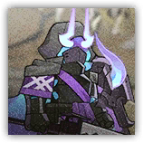
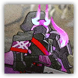

深池逐火护卫 Dublinn Flamechaser Guard
近战 法术；精英 亡灵
|
 |
附着了领袖火焰的深池部队防御者。他们已经死亡，但灌注法术的武装仍在支撑其战斗。 |
深池逐火护卫丨Flamechaser Guard
中型或大型亡灵，守序中立
| AC 17 | 先攻 +0（10） |
| HP 91（14d8+28） | |
| 速度 30尺 | |
| 调整 | 豁免 | 调整 | 豁免 | 调整 | 豁免 | ||||||||
|---|---|---|---|---|---|---|---|---|---|---|---|---|---|
| 力量 | 16 | +3 | +3 | 敏捷 | 10 | +0 | +0 | 体质 | 15 | +2 | +2 | ||
| 智力 | 9 | -1 | -1 | 感知 | 12 | +1 | +1 | 魅力 | 12 | +1 | +1 |
| 抗性 火焰 |
| 感官 黑暗视觉60尺，被动察觉11 |
| 语言 懂塔拉语但不会说 |
| CR 5（XP 1,800；PB +3） |
特质 Traits
怨恨余烬 Ember of Resentment。深池逐火护卫因非光耀非重击伤害生命值降至0时，其进行一次体质豁免（DC为5+所受伤害）。豁免成功则改为将生命值降至1 。逐火护卫生命值为1期间若未处于任何敌人触及距离内则还会获得隐形状态。
燃苇护体 Burning Bulwark。如果逐火护卫周围5尺有燃烧的物件或生物，它获得半身掩护。
动作 Actions
多重攻击 Multiattack。深池逐火护卫进行两次火铸盾刃攻击。
火铸盾刃 Flameforged Blade。近战攻击检定：+6，触及5尺。命中：9（1d10+4）挥砍伤害，外加4（1d8）火焰伤害。
深池逐火精锐护卫 Dublinn Flamechaser Elite Guard
近战 法术；精英 亡灵
|
 |
附着了领袖火焰的深池部队精锐防御者。更加执着地追逐着领袖的火焰，灌注法术的武装使他们难以被打倒。 |
深池逐火精锐护卫丨Flamechaser Elite Guard
中型或大型亡灵，守序中立
| AC 17 | 先攻 +0（10） |
| HP 126（18d8+45） | |
| 速度 30尺 | |
| 调整 | 豁免 | 调整 | 豁免 | 调整 | 豁免 | ||||||||
|---|---|---|---|---|---|---|---|---|---|---|---|---|---|
| 力量 | 18 | +4 | +4 | 敏捷 | 10 | +0 | +0 | 体质 | 16 | +3 | +3 | ||
| 智力 | 9 | -1 | -1 | 感知 | 12 | +1 | +1 | 魅力 | 13 | +1 | +1 |
| 抗性 火焰 |
| 感官 黑暗视觉60尺，被动察觉11 |
| 语言 懂塔拉语但不会说 |
| CR 7（XP 2,900；PB +3） |
特质 Traits
怨恨余烬 Ember of Resentment。当逐火护卫因非光耀非重击伤害生命值降至0时，其进行一次体质豁免（DC为5+所受伤害）。豁免成功则改为将生命值降至1 ，然后其对于远程攻击而言获得隐形状态，直到其下一回合开始。逐火护卫生命值为1期间若未处于任何敌人触及距离内则还会获得隐形状态。
燃苇护体 Burning Bulwark。如果逐火护卫周围5尺有燃烧的物件或生物，它获得半身掩护。
动作 Actions
多重攻击 Multiattack。深池逐火精锐护卫进行两次火铸盾刃攻击。
火铸盾刃 Flameforged Blade。近战攻击检定：+7，触及5尺。命中：16（2d10+5）挥砍伤害，外加4（1d8）火焰伤害。